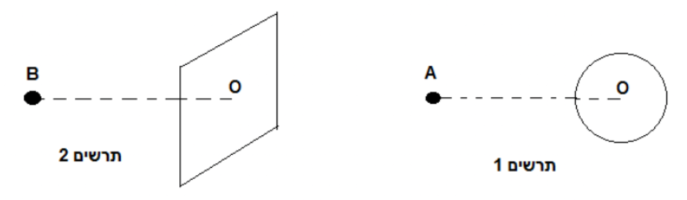
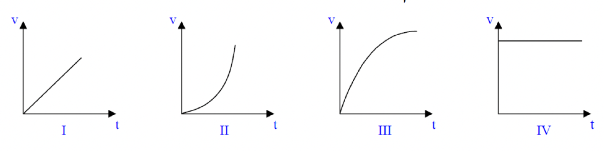

נתונים 2 גופים מוליכים טעונים:
1) כדור מוליך בעל רדיוס R = 10 cm (תרשים 1), שמרכזו O, טעון במטען חשמלי.
2) לוח מרובע גדול מאוד ("אינסופי") טעון במטען חשמלי בצפיפות אחידה, שמרכזו O (תרשים 2).
נתון כי גודל השדה החשמלי בנקודה A, הנמצאת במרחק 80 cm משפת הכדור (לא ממרכזו), ובנקודה B, הנמצאת במרחק 80 cm ממשטח הלוח, הוא 10 N/C וכיוונו שמאלה (ראו בתרשימים 1 ו-2).

א.מצאו את מטענו (גודל וסימן) של הכדור הטעון ואת הצפיפות המשטחית של הלוח (גודל וסימן). (8 נקודות)
משחררים אלקטרון ממנוחה מכל אחת מן הנקודות A ו- B. לפניכם 4 גרפים המתארים מהירות כתלות בזמן.

ב.(1) קבעו איזה מבין הגרפים מתאים לתיאור תנועתו של האלקטרון ששוחרר מנקודה B. נמקו את קביעתכם. (4 נקודות)
(2)קבעו איזה מבין הגרפים מתאים לתיאור תנועתו של האלקטרון ששוחרר מנקודה A. נמקו את קביעתכם. (5 נקודות)
בפעם אחרת, הקנו לאלקטרון מהירות התחלתית v0 כלפי מטה במישור התרשים, מאותן שתי
הנקודות A, B.
ג.(1) באיזה משני המקרים ייתכן שהאלקטרון יבצע תנועה מעגלית קצובה? נמקו! (5 נקודות)
(2)חשבו מה צריכה להיות מהירותו ההתחלתית, v0, של האלקטרון כדי שתתקיים תנועה
מעגלית זו. (6 נקודות)
ד.במקרה של הגוף השני, עבורו האלקטרון לא מבצע תנועה מעגלית, מה תהיה צורת מסלולו? הסבירו. (5.33 נקודות)